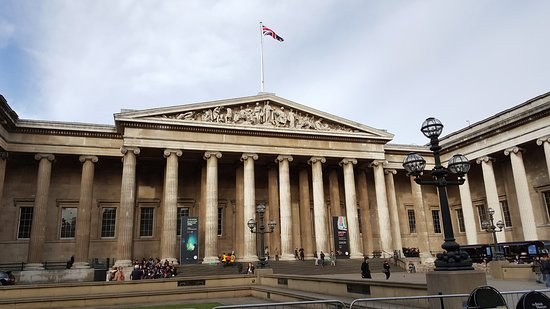

British Museum este cel mai vechi si unul dintre cele mai mari muzee din lume. Sunt putine locuri unde pot fi admirate atatea comori ale tuturor timpurilor sub acelasi acoperis. In mod normal British Museum este printre cele mai vizitate obiective turistice in Londra. Turistii vor fi fascinati de mumiile egiptene sau vor fi inspirati de superbele expozitii de desene si schite care se schimba de cateva ori pe an.
Pentru o vizita la British Museum, turistii ar trebui sa rezerve timp din belsug in vacanta lor la Londra, deoarece muzeul adaposteste o multime de comori. Poate cel mai bine ar fi sa luati in considerare mai multe vizite pentru a putea vedea fiecare exponat pe indelete.
In anul 1753 guvernarea din acele vremuri, a cumparat colectia lui Sir Hans Sloane, un doctor foarte bogat care profesa in Chelsea. Colectia consta in peste 80 de mii de piese printre care se numarau fosile, plante, monezi, medalii sau desene. Acesta a fost inceputul a ceea ce astazi reprezinta probabil cea mai buna colectie a unui muzeu din lume. Un decret al Parlamentului a desemnat British Museum, primul muzeu public din lume. Imediat dupa aceasta, o impresionanta selectie de carti ale carei baze fusesera puse de familia Harley, a fost adaugata colectiei (Cottonian Library).
In anul 1757 Regele George al II-lea a donat Biblioteca Regala catre British Museum pentru ca in anul 1823 George al III-lea sa confere muzeului dreptul de a intra in posesia unei copii din fiecare carte ce este publicata in Marea Britanie. Acest drept dainuie si in ziua de astazi.
Cu timpul, din cauza achizitionarii unor cantitati impresionante de antichitati, artefacte si descoperiri din intreaga lume, a devenit tot mai evident ca obitinerea unui spatiu mult mai mare, pentru a gazdui colectia in continua crestere a muzeului, era esential. In anul 1823 Robert si Sydney Smith si-au facut publice planurile pentru a construi noua cladire ce urma sa gazduiasca British Museum. Aceasta lucrare a fost dusa la bun sfarsit in urmatorii 30 de ani iar rezultatul este una dintre cele mai impresionante cladiri din Londra. Proiectata in stil renascentist grec, aceasta cladire minunata constituie un obiectiv turistic in sine, lasand la o parte comorile pe care le adaposteste. Pana in anul 1850, locul deja includea si Marea Curte, in mijlocul careia a fost construita Sala Rotunda de Lectura. Aceasta este acoperita de unul dintre cele mai mari domuri din lume.
In ciuda extinderii, spatiul a devenit din nou o problema si un nou loc pentru Colectia de Istorie a Naturii a trebuit sa fie gasit. Aceasta a fost transferata la South Kensington in anii 1880 iar astazi formeaza Muzeul de Istorie a Naturii. O alta schimbare importanta in cadrul muzeului a avut loc cand s-a luat decizia ca Biblioteca Britanica sa fie mutata in cladirea special construita pentru acest scop la St. Pancras. Mutarea aceasta enorma a fost inceputa in anii 1970 si nu a fost terminata decat abia in anul 1998.
Astazi, British Museum gazduieste nu mai putin de sase milioane si jumatate de obiecte de arta si are 94 de expozitii permanente si temporare. Un departament educational ofera o gama larga de servicii culturale pentru adulti dar si pentru copii. Exista si alte departamente specializate pe monede si medalii, Egiptul Antic si Sudan, Africa, Oceania si Americile, Antichitati Grecesti si Romane, Asia, Preistorie si altele.